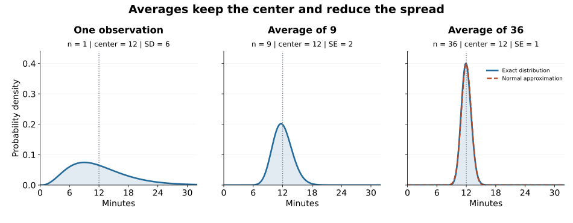

MSC 201 · Combined lecture notes · Sections 7.1–7.3
The central limit theorem
A one-class overview: how averages vary, when a normal model helps, and why sample size matters.
Open the simplified normal table in a new tabReference
For n independent observations from the same population, with mean μ and finite standard deviation σ:
| Variable | Center | Standard deviation | Standardize |
|---|---|---|---|
| One observation X | μ | σ | z = (x − μ)/σ |
| Sample mean X̄ | μ | SE = σ/√n | z = (x̄ − μ)/SE |
| Sample sum S | nμ | σ√n | z = (s − nμ)/(σ√n) |
Convert back: value = center + z × spread. Sum and mean: S = nX̄.
Normal table: F(z) is the area to the left. Right tail = 1 − F(z); between = F(upper z) − F(lower z).
Use the same table rules as Sections 6.1–6.2: round z to the nearest tenth, with halfway values rounded away from zero. For a percentile, choose the closest table probability; break a tie with the z closer to zero. Probabilities have three decimals. Do not interpolate.
Double-click or double-tap a blank solution area to reveal its answer. With a keyboard, focus that area and press Enter or Space.
7.1 · Averages have their own distribution
What does each value represent?
Take 500 samples of 36 completion times. Plot each sample's average. How many plotted values are there? What is n?
There are 500 plotted averages. Each average uses n = 36 observations. This is a sampling distribution of the mean: the distribution of averages across repeated samples of a fixed size.
The central limit theorem: for independent observations from the same population with finite, positive variance, the distribution of standardized sample averages approaches the standard normal distribution as n grows. For a sufficiently large n, use a normal model for X̄ with center μ and standard error σ/√n.
The population itself can stay skewed. Averaging reduces the spread of the averages. The formulas for center and standard error hold under the stated sampling assumptions even before a normal approximation is accurate.

Find the center and spread
Individual times have μ = 12 minutes and σ = 6 minutes. For n = 36, find the center and SE of X̄. Then increase n to 144.
At n = 36: center = 12 minutes; SE = 6/√36 = 6/6 = 1 minute.
At n = 144: center = 12 minutes; SE = 6/√144 = 6/12 = 0.5 minute.
Quadrupling n halves SE. Individual times still have SD 6 minutes. A smaller SE describes greater precision of an average.
7.3 · Use the normal model for an average
Continue with μ = 12, σ = 6, and n = 36, so SE = 1. Assume the sample size and population shape support the normal approximation.
Find probabilities
- Find P(X̄ > 13).
- Find P(11.5 < X̄ < 12.5).
- z = (13 − 12)/1 = 1.0. P(X̄ > 13) ≈ 1 − 0.841 = 0.159.
- Endpoint z-scores are −0.5 and 0.5. Probability ≈ 0.691 − 0.309 = 0.382.
These probabilities describe repeated sample averages. The distribution of individual times requires its own model.
Find a cutoff
Find the approximate 90th percentile of X̄.
The table entry closest to 0.900 is 0.903, at z = 1.3. Cutoff ≈ 12 + 1.3(1) = 13.3 minutes. About 90% of repeated sample averages are below this value.
7.2 · A total is n times an average
A sum has center nμ and SD σ√n. Independent variances add: variance of S = nσ². Taking its square root gives σ√n. As n grows, a total's SD increases while an average's SE decreases.
Find a total's center, spread, and probability
For the same 36 times, find the mean and SD of S. Find P(S > 468).
Mean total = 36(12) = 432 minutes. SD total = 6√36 = 36 minutes.
S > 468 is equivalent to X̄ > 468/36 = 13. Both events have z = 1 and approximate probability 0.159.
Directly: z = (468 − 432)/36 = 1. Adding a fixed 5-minute setup time would raise the mean total by 5 minutes and leave its SD unchanged.
Check the conditions
- Sampling: use observations that represent the population of interest. A large sample does not repair selection bias.
- Independence: nearby or linked observations can move together. The usual SE formula may then misstate uncertainty. For sampling without replacement, the course guideline is to sample at most 10% of the population.
- Shape: independent observations from a normal population have a normal mean at any n. With a skewed population, more observations may be needed. Strong skewness or extreme outliers can require much more than 30.
- Stability: larger independent samples give more stable averages in the long run. Adding one observation can still move an average either toward or away from μ.
Judge the claims
- “Thirty observations always guarantee normal sample averages.”
- “A tiny SE removes bias from a voluntary online poll.”
- “Thirty-six strongly correlated readings can use σ/√36 without checking dependence.”
- False. Population shape and tails affect the needed sample size.
- False. Precision and representative sampling are separate issues.
- False. Positive dependence can make the usual formula underestimate uncertainty.
7.3 · Connection to binomial counts
A binomial count is a sum of independent 0-or-1 outcomes. Its normal approximation works better when both expected successes np and expected failures n(1 − p) are large. The textbook guideline is greater than 5 each; 10 or more each gives a more cautious guideline.
A continuous curve assigns probability through interval area. A whole-number count k is represented by the interval k − 0.5 to k + 0.5.
| Count event | Area under the approximating curve |
|---|---|
| Exactly 10 | Between 9.5 and 10.5 |
| At least 10 | To the right of 9.5 |
| At most 10 | To the left of 10.5 |
Which approximation is more reasonable?
Compare 100 trials with p = 0.5 to 100 trials with p = 0.01.
At p = 0.5, expected successes and failures are 50 and 50: a normal approximation is reasonable. At p = 0.01, they are 1 and 99: too few expected successes. A large trial count alone is insufficient.
Next: confidence intervals
Here we started with a population mean μ and described possible sample averages. Next we use an observed sample average to estimate an unknown μ.
Estimate ± margin of error, where margin of error = critical multiplier × standard error.
For an approximately normal sampling distribution, about 95% of sample averages fall within roughly two SEs of μ. This leads to an interval procedure that captures μ in about 95% of repeated samples when its assumptions hold. Larger samples reduce SE and usually give narrower intervals.
Quick check
Apply the essentials
Independent observations have μ = 40 and σ = 8. Assume a normal model for averages is appropriate.
- For n = 16, find the mean and SE of X̄.
- Find P(X̄ > 44).
- Find the center and SD of the total S.
- At n = 64, what is the mean's SE?
- Center = 40; SE = 8/√16 = 2.
- z = (44 − 40)/2 = 2.0; probability ≈ 1 − 0.977 = 0.023.
- Center = 16(40) = 640; SD = 8√16 = 32.
- SE = 8/√64 = 1.